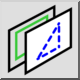

Dit is een automatische vertaling.
Werkbalk / icoon:

Sneltoets: W, Y
Opdrachten: layermenu
De functies in het lagen menu kunnen worden gebruikt om lagen toe te voegen, te wijzigen en te verwijderen. Sommige functies zijn ook beschikbaar als knoppen bovenaan de lagenlijst.